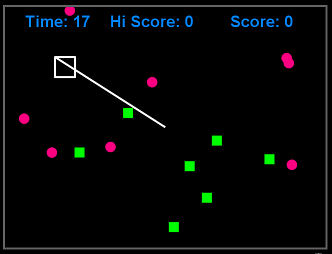

I wrote a little (boring) browser game based on a programmer's bug in drawing a square, where the postioning of the square was done using a 'LineTo' command instead of a 'MoveTo'. This results in a constantly drawn line from the coordinate system's origin to the square you control with the cursor keys. The target is to collect all the green squares while avoiding red bullets flying around.
You can try the game directly in your browser clicking here: The 'LineTo' Bug
Below you see a screenshot of the running game:
